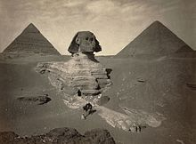
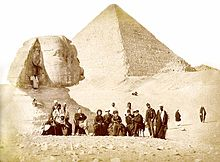
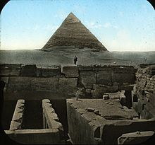

Giza Pyramid
The Giza pyramid complex is an archaeological site on the Giza Plateau, on the outskirts of Cairo, Egypt. It includes the three Great Pyramids (Khufu/Cheops, Khafre/Chephren and Menkaure), the Great Sphinx, several cemeteries, a workers' village and an industrial complex. It is located in the Western Desert, approximately 9 km (5 mi) west of the Nile river at the old town of Giza, and about 13 km (8 mi) southwest of Cairo city centre.
The pyramids, which have historically been common as emblems of ancient Egypt in the Western imagination, were popularised in Hellenistic times, when the Great Pyramid was listed by Antipater of Sidon as one of the Seven Wonders of the World. It is by far the oldest of the ancient Wonders and the only one still in existence.
Consruction
Most construction theories are based on the idea that the pyramids were built by moving huge stones from a quarry and dragging and lifting them into place. The disagreements center on the method by which the stones were conveyed and placed and how possible the method was.
In building the pyramids, the architects might have developed their techniques over time. They would select a site on a relatively flat area of bedrock—not sand—which provided a stable foundation. After carefully surveying the site and laying down the first level of stones, they constructed the pyramids in horizontal levels, one on top of the other.
For the Great Pyramid of Giza, most of the stone for the interior seems to have been quarried immediately to the south of the construction site. The smooth exterior of the pyramid was made of a fine grade of white limestone that was quarried across the Nile. These exterior blocks had to be carefully cut, transported by river barge to Giza, and dragged up ramps to the construction site. Only a few exterior blocks remain in place at the bottom of the Great Pyramid. During the Middle Ages (5th century to 15th century), people may have taken the rest away for building projects in the city of Cairo.
To ensure that the pyramid remained symmetrical, the exterior casing stones all had to be equal in height and width. Workers might have marked all the blocks to indicate the angle of the pyramid wall and trimmed the surfaces carefully so that the blocks fit together. During construction, the outer surface of the stone was smooth limestone; excess stone has eroded as time has passed
Purpose
The pyramids of Giza and others are thought to have been constructed to house the remains of the deceased Pharaohs who ruled over Ancient Egypt. A portion of the Pharaoh's spirit called his ka was believed to remain with his corpse. Proper care of the remains was necessary in order for the "former Pharaoh to perform his new duties as king of the dead." It's theorized the pyramid not only served as a tomb for the Pharaoh, but also as a storage pit for various items he would need in the afterlife. "The people of Ancient Egypt believed that death on Earth was the start of a journey to the next world. The embalmed body of the King was entombed underneath or within the pyramid to protect it and allow his transformation and ascension to the afterlife."
Astronomy
The sides of all three of the Giza pyramids were astronomically oriented to the north-south and east-west within a small fraction of a degree. Among recent attempts to explain such a clearly deliberate pattern are those of S. Haack, O. Neugebauer, K. Spence, D. Rawlins, K. Pickering, and J. Belmonte. The arrangement of the pyramids is a representation of the Orion constellation according to the disputed Orion correlation theory.
Worker's Village
The work of quarrying, moving, setting, and sculpting the huge amount of stone used to build the pyramids might have been accomplished by several thousand skilled workers, unskilled laborers and supporting workers. Bakers, carpenters, water carriers, and others were also needed for the project. Along with the methods utilized to construct the pyramids, there is also wide speculation regarding the exact number of workers needed for a building project of this magnitude. When Greek historian Herodotus visited Giza in 450 BC, he was told by Egyptian priests that "the Great Pyramid had taken 400,000 men 20 years to build, working in three-month shifts 100,000 men at a time." Evidence from the tombs indicates that a workforce of 10,000 laborers working in three-month shifts took around 30 years to build a pyramid.
The Giza pyramid complex is surrounded by a large stone wall, outside which Mark Lehner and his team discovered a town where the pyramid workers were housed. The village is located to the southeast of the Khafre and Menkaure complexes. Among the discoveries at the workers' village are communal sleeping quarters, bakeries, breweries, and kitchens (with evidence showing that bread, beef, and fish were staples of the diet), a hospital and a cemetery (where some of the skeletons were found with signs of trauma associated with accidents on a building site). The workers' town appears to date from the middle 4th dynasty (2520–2472 BC), after the accepted time of Khufu and completion of the Great Pyramid. According to Lehner and the AERA team;
"The development of this urban complex must have been quite rapid. All of the construction probably happened in the 35 to 50 years that spanned the reigns of Khafre and Menkaure, builders of the Second and Third Giza Pyramids".
Without carbon dating, using only pottery shards, seal impressions, and stratigraphy to date the site, the team further concludes;
"The picture that emerges is that of a planned settlement, some of the world's earliest urban planning, securely dated to the reigns of two Giza pyramid builders: Khafre (2520–2494 BC) and Menkaure (2490–2472 BC)"